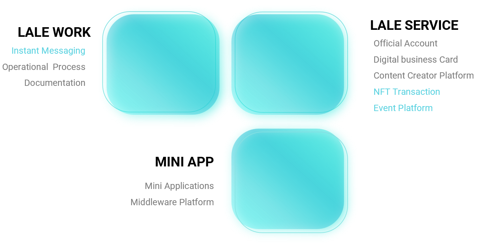
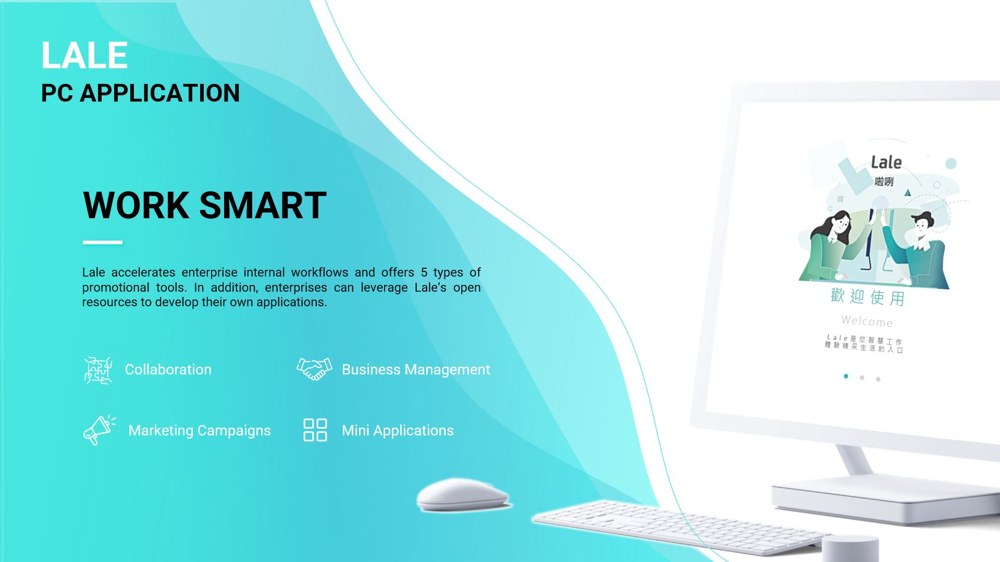
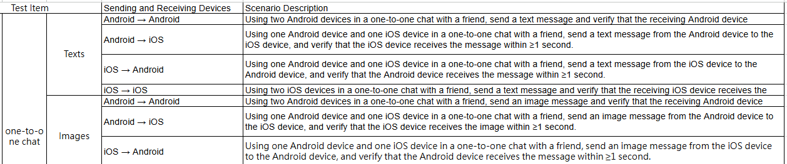
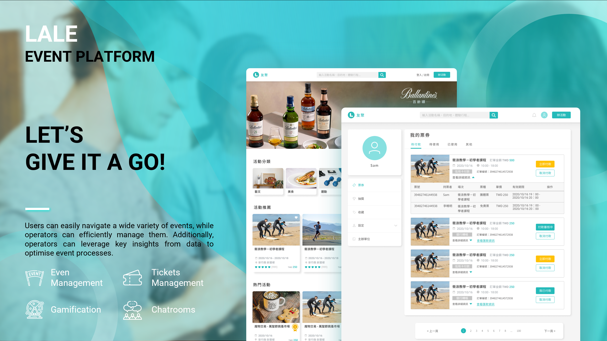
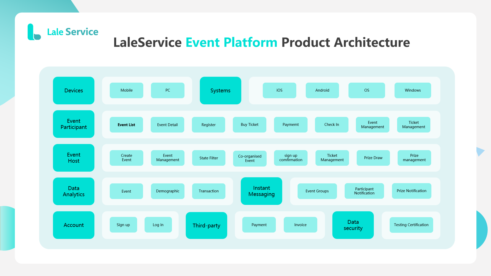
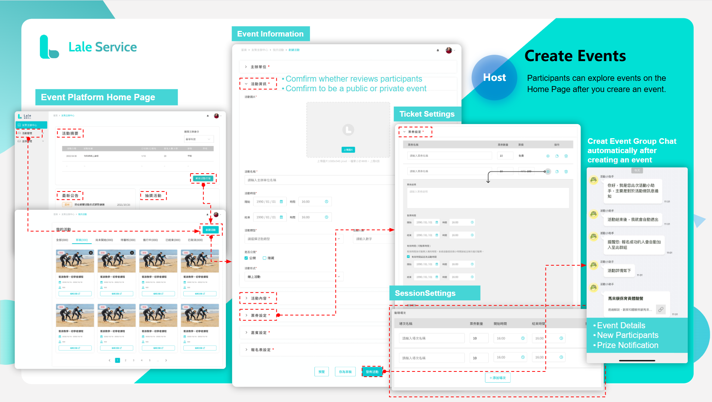

Flowring Technology, originally an ERP solutions provider, serves hundreds of enterprise clients with its workplace services. When I joined, the company was developing Lale, a new digital workplace platform designed to help organisations streamline operations, manage marketing campaigns, and bulid customised applications through an open platform architecture.
I worked across the product line, leading several key products from concept to delivery.
I owned the end-to-end product strategy and delivery of the Instant Messaging feature—my first product launched from concept to release.


I led the design and development of the Event Platform, a complex product involving multiple user roles and systems, aimming to improve UX satisfaction.



I successfully launched the platform and hosted the first internal conference event with ~200 participants, validating the product in a real-world scenario.
Beyond product delivery, I expanded into product strategy and go-to-market planning.
After eight months of product development, market research, and stakeholder collaboration, I led the delivery of a comprehensive GTM strategy for Lale, including:
The strategy was approved and implemented, supporting the product’s commercial rollout.
Three things stand out from this experience.
First, I developed a strong passion for designing complex workflows. I enjoy turning ambiguity into structured solutions, and working on the Event Platform, mapping detailed user flows across multiple roles, was particularly rewarding.
Second, I valued building meaningful relationships with stakeholders. Collaborating with cross-functional teams brought diverse perspectives and insights, which became a strong foundation for shaping our GTM initiatives.
Lastly, I continue to believe that user-centered design, a principle I developed during my undergraduate studies, is key to solving real problems, delivering value to users, and driving business impact.